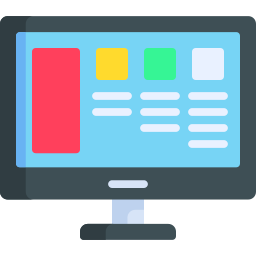

En BUT, chaque projet réalisé correspond à un bloc de compétences précis. Étant actuellement en deuxième année, je vous présente les six blocs sur lesquels nous avons travaillé :
Réaliser
Optimiser
Administrer
Gérer
Conduire
Collaborer
Ayant travaillé sur de nombreux projets tout au long de mon BUT, j'ai pu développer de nombreuses compétences techniques. En voici la liste :
Hard-skills

HTML

CSS

PHP

JavaScript

C

Java

Python

MySQL

PostgreSQL

GitHub
Mais j'ai également pu développer des compétences organisationnelles et communicationnelles, qui sont tout aussi importantes en entreprise :
Soft-skills

Anglais C1
Gestion de projet

Conception IHM
Communication

Espagnol B2